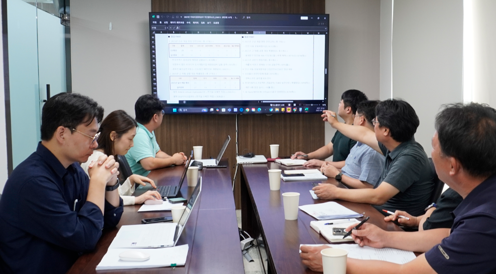
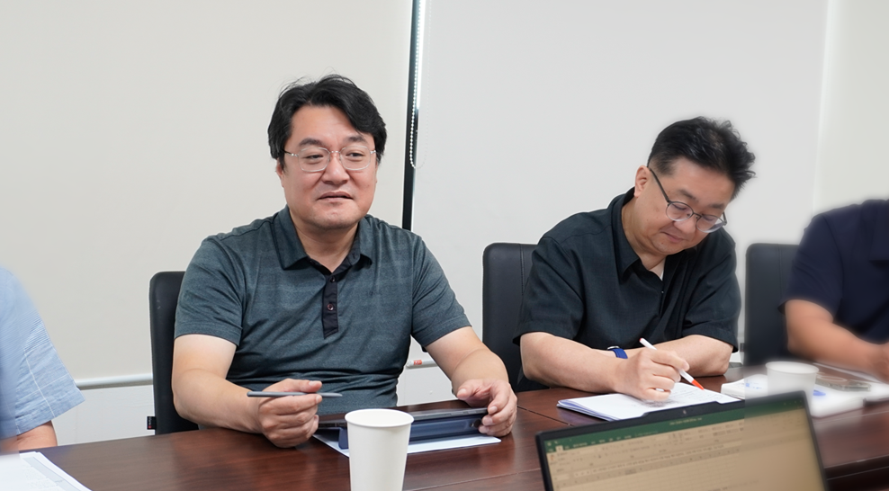
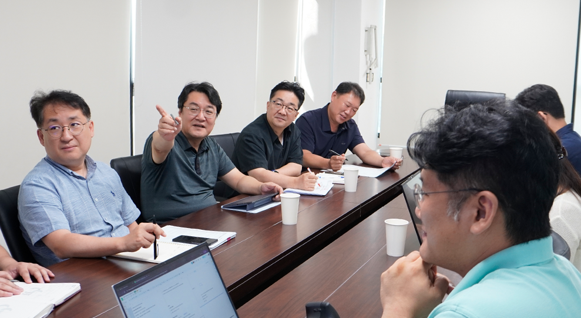

'감(感)'이 아닌 '데이터'로, '관계'가 아닌 '시스템'으로.
신보그룹이 시장의 변화에 발맞추고 100년 기업으로 나아가기 위해, 일하는 방식의 새로운 변화를 시작합니다.
변화의 목표는 투명한 데이터를 기반으로 예측 가능하게 일하고, 모든 직원이 자신의 전문성에 더욱 집중할 수 있는 환경을 만드는 것입니다.
경영기획부문을 이끄는 김희방 부사장님과의 인터뷰를 통해, '시스템으로 일하는 문화'가 가져올 구체적인 모습과 신보의 성장 로드맵을 확인해 봅니다.
■ 변화의 시작: 경영기획부문 신설
'경영기획부문'이라는 새로운 조직을 이끌게 되셨습니다. 소감 한 말씀 부탁드립니다.
중요한 시기에 새로운 역할을 맡게 되어 큰 책임감을 느낍니다.
경영기획부문은 회사의 현재를 살피고 미래의 방향을 제시해야 하는 중요한 자리라고 생각합니다. 앞으로 명확한 목표와 합리적인 기준으로 각 부서의 노력이 시너지를 낼 수 있도록 돕고, 회사가 안정적으로 성장할 수 있는 시스템의 기틀을 마련하는 데 집중하고자 합니다.
현시점에서 '경영기획부문'을 신설한 것은 중요한 전략적 의미를 가질 것 같습니다. 그 배경과 목적에 대해 설명 부탁드립니다.
신보는 현장의 강력한 실행력과 수주 역량을 바탕으로 업계 1위라는 놀라운 성장을 이뤄냈습니다. 이는 모든 임직원의 땀과 헌신이 만들어낸 자랑스러운 역사입니다.
하지만 회사의 규모가 급격히 커지면서, 과거의 성공 방정식만으로는 풀기 어려운 새로운 과제에 직면하게 되었습니다.
가장 대표적인 현상은 '매출의 성장과 수익성의 하락'이라는 불일치입니다.
외형은 커지는데 내실은 약해지고 있다는 명백한 신호였죠.
그 원인은 우리의 성공 방식 자체에 있었습니다. 우리는 그동안 '수주·현장 중심의 전통적 사업 역량'을 통해 성장해왔고, 이 전략은 업계 1위라는 성공을 가져다주었습니다.
하지만 빠른 성장에 집중하는 과정에서, 이를 시스템적으로 뒷받침하고 리스크를 관리하는 '전사적 관리 역량'을 갖추는 데는 상대적으로 힘을 쏟지 못했습니다.
성공을 이끌었던 핵심 역량과 관리 역량 간의 불균형이 발생한 것입니다.
결과적으로 우리는 명실상부한 중견기업으로 성장했지만, 그 위상에 걸맞은 관리 시스템과 체계적인 절차, 기준은 아직 수립하지 못하고 있는 상황입니다.
우리가 추구하는 '자율책임경영'이 각 부문의 시너지를 통해 더 큰 성과를 내기 위해서는, 이제 개별 조직의 역량을 넘어 전사적 관점에서 이들을 조율하고 지원하는 고도화된 '조직역량', 즉 시스템의 힘이 반드시 필요합니다.
경영기획부문은 바로 이러한 지속 가능한 성장의 기틀을 마련하기 위해 신설되었습니다.
/
‘경영기획부문’이 이러한 문제를 해결하기 위해 신설되었다고 봅니다. 관리의 체계화를 위해 가장 중요하게 생각하는 과제는 무엇이라 생각하시나요?
가장 중요한 과제는 '사람과 경험 중심'의 업무 방식을 '시스템 중심'으로 전환하는 것입니다. 특정인의 탁월한 역량이나 경험에 의존하는 방식은, 그 사람이 없으면 조직 전체가 흔들릴 수 있는 리스크를 내포합니다.
따라서 수주부터 실행, 정산에 이르는 프로젝트 전 과정의 절차와 기준을 명확히 하고, 모든 과정이 데이터로 기록되고 분석될 수 있는 '시스템의 기틀'을 마련해야 합니다.
이는 단순히 업무를 통제하려는 것이 아닙니다. 오히려 직원들이 부가적인 업무에 쏟는 에너지를 줄이고, 축적된 데이터를 바탕으로 더 나은 의사결정을 내리며 본연의 업무에 더욱 집중할 수 있도록 돕는 강력한 '지원 체계'를 만드는 과정입니다. 이것이 관리체계의 시작이라 보고 있습니다.
■ 새로운 설계: 경영기획부문의 역할과 전략
신설된 '경영기획부문'은 과거의 지원 부서와는 역할이 다를 것 같습니다. 앞으로 회사의 성장을 위해 어떤 역할을 수행하며 기여해 나갈 것으로 기대하시나요?
과거의 지원 부서가 각 현업의 요청에 대응하는 역할이었다면, 새로운 경영기획부문은 회사가 나아갈 방향을 먼저 제시하고 전사적 역량을 한곳으로 모으는 '네비게이터', '조타수'의 역할을 해야 합니다.
저희의 역할은 크게 두 가지 축으로 나뉩니다.
- 첫째는 기존 사업의 안정화와 내실화입니다.
- 둘째는 시장 변동성의 한계를 극복하고 100년 기업으로 나아가기 위한 새로운 성장 동력을 발굴하는 것입니다.
이를 위해 전사적인 방향성을 명확히 설정하고 조직을 한 방향으로 정렬(Alignment)하며, 데이터 기반의 합리적인 의사결정을 지원할 것입니다. 궁극적으로는 '현재의 안정'과 '미래의 성장'이라는 두 마리 토끼를 모두 잡을 수 있는 '지속 가능한 성장 시스템'을 구축하여 회사에 기여하고 싶습니다.
/
과거에는 흩어져 있던 인사, 지원, 법무, 전산 등의 조직들이 하나의 부문으로 통합되었습니다. 이 조합을 통해 구체적으로 어떤 시너지를 기대하고 계신지, 그 전략이 궁금합니다.

기능들의 단순한 물리적 통합이 아닌, '횡적 관리 시스템을 통한 전략적 시너지'를 목표로 합니다. 경영기획부문은 전략, 성과관리, 인재육성, 컴플라이언스, 법무, 리스크 관리라는 6대 핵심 기능에 집중하게 됩니다.
과거에는 이 기능들이 각자의 영역에서 분절적으로 움직였다면, 이제는 회사의 주요 안건에 대해 초기 단계부터 유기적이고 동시에 대응할 수 있게 됩니다.
이렇게 부서 간 칸막이를 허물고 전사적 역량을 집중할 때, 리스크는 선제적으로 관리하고 수익성은 더 빠르고 정확하게 확보할 수 있습니다.
■'100년 신보'를 향한 변화의 엔진
경영기획부문 내의 여러 부서에서 ERP개발, 인사평가, 제도 개편 등 중요한 변화들이 동시다발적으로 진행 중입니다. 이 모든 과제들 중에서, 핵심적으로 생각하시는 '재정비 포인트'는 무엇일까요?
모든 과제가 중요하지만, 하나의 구심점을 꼽으라면 단연 '데이터 기반의 전략적 인재 관리 체계 구축'입니다. 우리 업의 본질이자 회사의 가장 중요한 자산은 '사람'이기 때문입니다.
결국 모든 시스템의 재정비는, 회사의 가장 중요한 자산인 '사람'을 데이터 기반으로 관리하기 위한 것입니다.
'사람'이라는 핵심 자산을 더욱 잘 활용하고 성장시키기 위해서는, 소수의 경험에 의존하는 것을 넘어 객관적이고 신뢰할 수 있는 토대가 반드시 필요합니다.
회사의 모든 활동을 객관적인 데이터로 축적하고, 실시간으로 모니터링하며, 투명성과 신속성을 확보하는 핵심 인프라를 만드는 것이 바로 그 토대를 세우는 일입니다.
현재 진행 중인 지속적인 ERP 개발 및 안정화는 바로 이러한 인프라를 구축하기 위한 중요한 과제 중 하나입니다. 인사, 구매, 사업관리 등 각 영역의 시스템이 고도화될 때, 비로소 우리는 데이터에 기반한 합리적인 의사결정을 내릴 수 있게 될 것입니다.
/
방금 말씀해주신 핵심 과제가 성공적으로 안착했을 때, 우리 직원들의 일하는 방식이나 회사의 의사결정 과정은 구체적으로 어떻게 달라질 것이라고 기대하시나요?
가장 큰 변화는 '감(感)'이 아닌 '데이터'에 기반하여 일하게 되는 것입니다. 예를 들어, 과거에는 개인의 경험이나 관계로 수주 여부를 결정했다면, 앞으로는 축적된 데이터를 통해 유사 프로젝트의 수익성, 리스크 등을 먼저 분석하고 의사결정을 내리게 될 것입니다.
직원 개개인의 입장에서는 본인의 역할과 목표가 훨씬 명확해질 것입니다.
회사의 전체 방향과 나의 업무가 어떻게 연결되는지 알게 되고, 정해진 절차와 시스템 안에서 예측 가능하게 일할 수 있게 됩니다.
이는 불필요한 업무나 소통의 오류를 줄여주고, 직원들이 각자의 전문성을 발휘하며 더 높은 부가가치를 창출하는 데 집중할 수 있는 환경을 만들어 줄 것이라 확신합니다.
■ 변화를 이끄는 철학과 비전

이러한 큰 변화를 이끌어가는 과정에서 예상되는 어려움도 있을 것 같습니다. 부사장님께서는 어떤 리더십과 소통 방식으로 구성원들의 공감대를 얻어 나가실 계획인가요?
가장 큰 어려움은 익숙함에서 벗어나는 것에 대한 심리적 저항과, 부서 간의 '사일로(Silo)' 현상일 것입니다.
'내 일만 잘하면 된다'는 생각은 변화의 가장 큰 걸림돌이 되곤 하죠. 그래서 제가 생각하는 리더십의 핵심은 '맥락 을 공유하는 것'입니다.
예를 들어, 인사팀이 단순히 '채용'이라는 과업을 수행하는 것을 넘어, '우리가 100년 기업으로 가기 위해 지금 어떤 인재가 필요한가?'라는 전사적 관점에서 자신의 업(業)을 바라보게 하는 것입니다.
저의 역할은 이처럼 각자의 업무가 회사의 큰 그림과 어떻게 연결되는지, 그 '유기적 관계'를 끊임없이 설명하고 보여주는 것입니다. '왜 우리가 이 변화를 해야만 하는가'에 대한 근본적인 공감대가 형성될 때, 비로소 구성원들은 변화의 주체로서 움직이기 시작합니다.
'회사가 시켜서 하는 일'이 아닌, '우리의 목표를 위해 함께 풀어가는 과제' 인식을 공유해 나가고 싶습니다.
/
모든 재정비가 성공적으로 완료된 모습을 떠올렸을 때, 부사장님께서 꿈꾸시는 신보의 모습은 지금과 비교해서 무엇이 가장 크게 달라져 있을까요?
제가 꿈꾸는 모습은 '명확한 전략 아래, 필요한 인재와 함께 시스템으로 성장하는 회사'입니다. 이는 회사가 나아갈 방향에 어떤 역량이 필요한지를 먼저 정의하고, 그 역량을 갖춘 인재를 체계적으로 발굴하고 육성하며 함께 성장하는 모습을 의미합니다.
이를 가능하게 하는 것이 바로 '일 잘하는 소통' 문화입니다.
시스템, 인재, 그리고 문화라는 세 축이 조화를 이룰 때, 직원과 회사가 함께 성장하는 '선순환 구조'를 완성할 수 있게 됩니다.
조직이 커지면서 나타나는 사일로 현상과 상호 이해 부족은 이러한 전략적 목표 달성에 가장 큰 걸림돌입니다.
재정비가 완료된 신보에서는, 내 부서의 일뿐만 아니라 회사 전체의 일이 어떻게 돌아가는지 이해하고 문제 발생 시 이를 숨기거나 지연하지 않고 신속하게 공유하며 함께 해결책을 찾는 소통 방식이 자리 잡을 것입니다.
결론적으로, 특정인의 역량이나 감에 의존하지 않고, 데이터 기반의 시스템과 전략적인 인재 운용, 그리고 성숙한 소통 문화를 통해 흔들림 없이 안정적으로 성장하는 회사
직원들은 회사의 명확한 비전 안에서 자신의 역할을 찾고 성장하며, 회사는 그 힘을 바탕으로 기존 사업의 한계를 넘어 새로운 도전에 나서는 선순환 구조
그것이 제가 그리는 재정비가 완료된 신보의 모습입니다.
/
/
신보그룹과 함께한지 어느덧 9개월 정도의 시간이 흘렀습니다. 부사장님께서 바라보시는 우리기업의 강점은 무엇이라고 생각하시나요?
지난 9개월간 제가 가장 크게 감명받은 것은 단연 '사람' 그리고 그분들이 가진 '강력한 실행력'입니다. 어떤 어려운 과제가 주어져도 어떻게든 방법을 찾아내고, 반드시 완수해내는 현장의 에너지는 우리 신보가 가진 그 무엇과도 바꿀 수 없는 최고의 자산입니다.
또한, 변화에 대한 두려움보다는 새로운 것을 배우고 시도하려는 열망이 조직 곳곳에 살아있다는 점도 매우 인상적이었습니다. 경영기획부문의 역할은 바로 이처럼 훌륭한 강점을 더욱 빛나게 해주는 것입니다.
우리가 가진 강력한 실행력에 체계적인 시스템이 더해진다면, 신보의 가능성은 무한하다고 믿습니다.